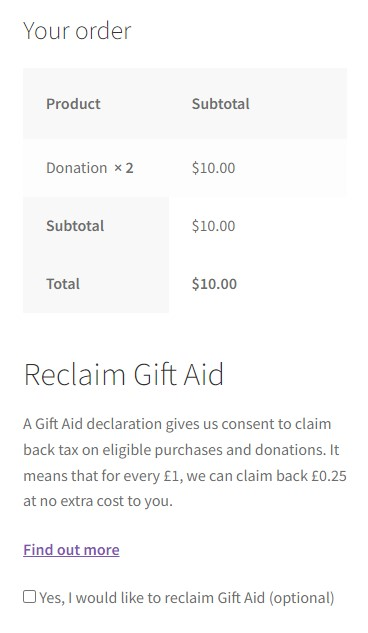

Gift Aid Addon for WooCommerce
A simple addon for WooCommerce that allows the store to collect Gift Aid consent from their
customers.
A WordPress plugin for WooCommerce stores that give shop admins the option to ask their customers if
they would like to consent to Gift Aid at the checkout page.
1. Copy the `woocommerce-gift-aid` folder into your `wp-content/plugins` folder
2. Activate the WooCommerce Gift Aid plugin via the plugins admin page
3. That's all for installation!
Once you've installed and activated the plugin, you can start by configuring the message seen by the
customer on the checkout page.
Navigate on the WordPress backend to the WooCommerce Settings and then to the Products tab. You should
see a new section under the products tab called "Gift Aid" (see fig 1).
Fig.1 - Showing the new settings section under the Products tab in the WooCommerce
Settings.
After setting up the text that will be shown the customer at checkout, you can start choosing the
products in your store that are applicable to Gift Aid.
Navigate on the WordPress backend to the Products page and edit a chosen product. Scroll down to the
Product Data section and go to the Advanced tab. You should see a new checkbox option there called
"Enable Gift Aid" (see fig 2). Checking that checkbox means that your customers will see the Gift Aid
message at checkout if they have this product in their cart (see fig 3). You can "Enable Gift Aid" like this on as
many products as you like.
Fig.2 - Showing the "Enable Gift Aid" checkbox option on the Edit Product page.

Fig.3 - The checkout page with the Gift Aid consent option.
Recommendations and Disclaimers
We recommend that you have a page or section on your eCommerce store that explains Gift Aid to your customers
and how their data is used in regards to Gift Aid.
This plugin does not gather any data about the customer. It is the sole responsibility of the store using this plugin to
make sure their customers are eligible to claim Gift Aid on a purchase. It is also the sole responsibility of the store
to ensure their customers understand what giving consent for Gift Aid means.
According to the www.gov.uk (https://www.gov.uk/claim-gift-aid/gift-aid-declarations), a full Gift Aid
declaration must include the donor's full name, the donor's home address and an agreement from the donor
to Gift Aid being claimed.
This plugin only handles the agreement from the donor. This plugin assumes that your
store is already getting the user's full name and home address as part of the billing information.